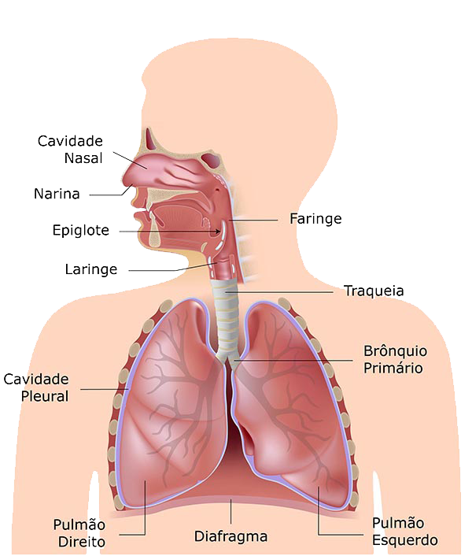

O sistema respiratório é o conjunto de órgãos responsáveis pelas trocas gasosas entre o organismo dos animais e o meio ambiente,
ou seja, a hematose pulmonar, possibilitando a respiração celular. Nos vertebrados terrestres, o sistema respiratório é fundamentalmente formado por dois pulmões.

| Componentes do sistema respiratório | |
| Orgãos | Função |
| Narina | Entrada e saída do ar |
| Cavidade Nasal | Condução, aquecimento, filtração e umidificação do ar |
| Faringe | Condução do Ar |
| Laringe | Condução do Ar |
| Epiglote | Ele serve para separar a via entre o esôfago e traquéia |
| Traquéia | Condução do Ar |
| Brônquios | Condução do Ar |
| Cavidade Pleural | Lubrificar os movimentos pulmonares dentro da cavidade |
| Diafragma | Serve de fronteira entre a cavidade torácica e a abdominal |